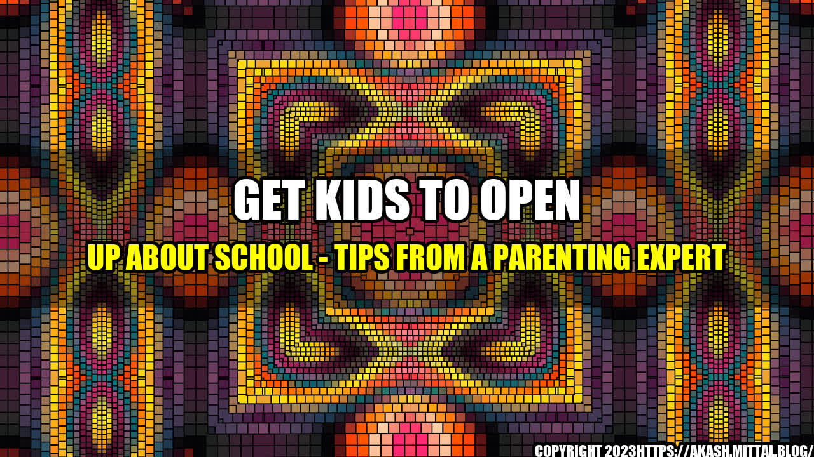

The Importance of Communication
As a parent, one of the most important things you can do for your child is to be a good listener. Communication is key to a healthy relationship, and this is especially true when it comes to your child's education. It's natural for kids to be hesitant to talk about school, but by following some simple tips, you can help your child open up and share their experiences with you.
Here are some tips on how to get your kids to open up about school:
1. Ask Open-Ended Questions
Instead of asking closed-ended questions like, "How was your day?" ask open-ended questions that require more than a one-word answer. For example, you could ask, "What was the best part of your day?" or "What did you learn in school today that you found interesting?" These types of questions encourage your child to think more deeply about their experiences and provide a more detailed response.
2. Show Interest and Empathy
Show your child that you are genuinely interested in what they have to say. Listen to them with empathy and don't judge or criticize their feelings. If your child had a bad day at school, don't dismiss their feelings, but instead, validate them and let them know that it's okay to feel that way. By showing interest and empathy, your child will feel more comfortable sharing their experiences with you.
3. Lead By Example
Be a role model for your child by sharing your own experiences and feelings about your day. Let them know what you did at work and how you felt about it. By sharing your own experiences, you are showing them that it's important to communicate and that you value their thoughts and opinions.
4. Create a Routine
Create a regular routine for talking about school. This could be during dinner time or before bedtime. Make it a habit to ask your child about their day and provide a comfortable environment for them to open up. By creating a routine, your child will know that they can count on you to listen and support them.
5. Involve Yourself in Your Child's School
Get involved in your child's school activities and events. Attend parent-teacher conferences and volunteer for school events. By being familiar with your child's school environment, you can better understand what they are going through and be more knowledgeable about their experiences.
Remember, every child is different, and some may be more hesitant to share than others. Be patient and give your child the space they need to feel comfortable opening up. Be supportive and let them know that you are there for them no matter what.
Conclusion
In conclusion, by following these tips, you can create a healthy and positive environment for your child to communicate about their school experiences. Remember to ask open-ended questions, show interest and empathy, lead by example, create a routine, and involve yourself in your child's school. By doing these things, you can strengthen your relationship with your child and help them navigate the ups and downs of their education.
References
- Parents.com - Raise a Child Who Loves to Learn
- PBS - How to Talk to Kids About School
- Edutopia - Strategies for Engaging Kids in School Conversations
Category
Parenting
Curated by Team Akash.Mittal.Blog
Share on Twitter Share on LinkedIn